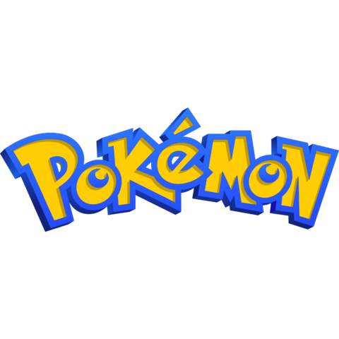

Personnel · 2026 en ligne
Fait Maison
Réseau social de recettes en Symfony : mon plus gros projet à ce jour, testé et déployé seul.
Projets · fiches détaillées
Pour chaque projet : le contexte, ma part quand on était plusieurs, des extraits du vrai code, l'architecture et ce que j'en retiens. La plupart sont des projets d'entraînement : ils montrent surtout comment j'ai progressé.
Personnel · 2026 en ligne
Réseau social de recettes en Symfony : mon plus gros projet à ce jour, testé et déployé seul.
Personnel · 2026 en cours
Gestion de budget en Symfony 8 : isolation des comptes, 82 tests et CI qualité dès les fondations.

Universitaire · équipe de 5 en ligne
Marketplace multi-rôles. Ma part : front, panier invité, commande et mise en production Docker.
Infrastructure · perso en service
Proxmox sur un mini-PC, conteneurs LXC et Docker, et un pare-feu OPNsense en résidence CROUS.

Personnel · 2025 terminé
Mon tout premier projet : une application Kotlin en terminal puis en JavaFX.

Personnel · 2025 en ligne
Site vitrine de restaurant en HTML, CSS et JavaScript, avec réservation dans Supabase.

Personnel · 2025–2026 en pause
Combats au tour par tour, 151 Pokémon importés de PokéAPI, tests JUnit 5 et CI.
Universitaire · binôme rendu
Jeu 2D en Go : construction récursive de l'arbre, collisions, zoom et téléportation.
Universitaire · équipe de 4 non terminé
Jeu en réseau en Kotlin. Ma part : l'analyse de testabilité et 55 tests de la librairie client.